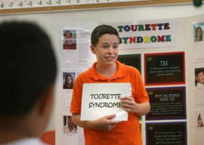

The Greater Missouri Chapter of the Tourette Syndrome Association (TSA) serves individuals and families in the St. Louis and Kansas City metropolitan areas and beyond. In concert with the national TSA, Missouri TSA provides information about Tourette Syndrome (TS) and the resources available to help affected families throughout their service area. The chapter is an all-volunteer and welcomes the participation of anyone interested in Tourette Syndrome.
The national Tourette Syndrome Association is a national voluntary non-profit membership organization for Tourette Syndrome. They offer resources and referrals to help people and their families cope with the problems that occur with TS. They raise public awareness and counter media stereotypes about TS. Membership includes individuals, families, relatives, and medical and allied professionals working in the field.
The CDC Tourette Syndrome Resource site provides tips and information about Tourette Syndrome, about managing the condition and supporting the child. The resource provides information about diagnosing Tourette Syndrome and resources and tools to recognize and prevent bullying.
Midwest Institute for Neurological Development (MIND) is a brain-based treatment and educational center dedicated to the evaluation and management of Neurobehavioral and Neurodevelopmental disorders.
Greater Missouri Tourette Syndrome AssociationThe Greater Missouri Chapter of the Tourette Syndrome Association (TSA) serves individuals and families in the St. Louis and Kansas City metropolitan areas and beyond. In concert with the national TSA, Missouri TSA provides information about Tourette Syndrome (TS) and the resources available to help affected families throughout their service area. The chapter is an all-volunteer and welcomes the participation of anyone interested in Tourette Syndrome. |
|
|  | The National Tourette Syndrome AssociationThe National Tourette Syndrome Association is a national voluntary non-profit membership organization for Tourette Syndrome. They offer resources and referrals to help people and their families cope with the problems that occur with TS. They raise public awareness and counter media stereotypes about TS. Membership includes individuals, families, relatives, and medical and allied professionals working in the field. |
CDC Tourette Syndrome ResourceThe CDC Tourette Syndrome Resource site provides tips and information about Tourette Syndrome, about managing the condition and supporting the child. The resource provides information about diagnosing Tourette Syndrome and resources and tools to recognize and prevent bullying. |
|
Midwest Institute for Neurological Development (MIND)Midwest Institute for Neurological Development (MIND) is a brain-based treatment and educational center dedicated to the evaluation and management of Neurobehavioral and Neurodevelopmental disorders. |